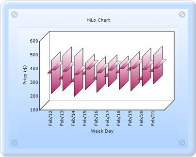
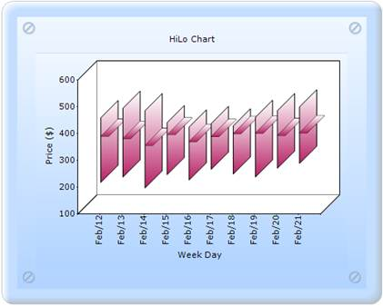
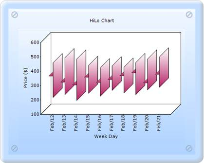

It is used to set the OpenCloseDraw mode for the HiLoOpenClose chart.
|
Details | |
|
Possible values |
Open - Points out the opening value of that period. Close - Points out the closing value of that period. Both - Points out both the opening and closing values of that period. |
|
Default value |
Both |
|
2D/3D limitations |
No |
|
Application to chart element |
Any series points. |
|
Application to chart types |
HiLoOpenClose chart |

Figure 246: HiLoOpenClose chart with OpenCloseDrawMode as Both

Figure 247: HiLoOpenClose chart with OpenCloseDrawMode as Close

Figure 248: HiLoOpenClose chart with OpenCloseDrawMode as Open
HiLoOpenClose chart with OpenCloseDrawMode can be created through two ways:
· Builder
· ChartModel
 Builder
Builder